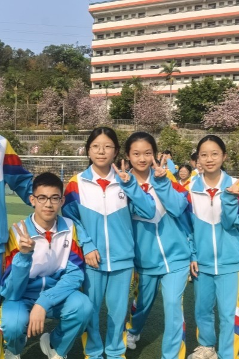
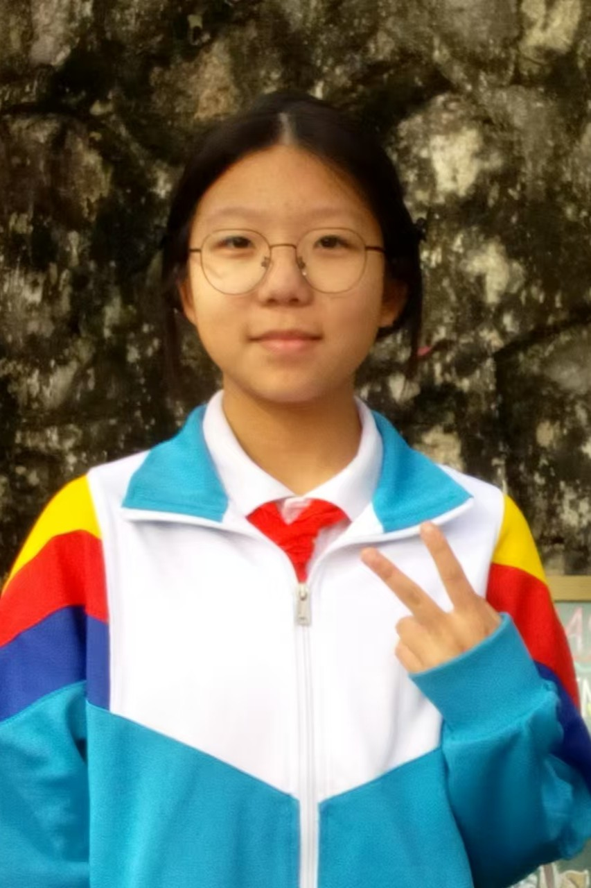
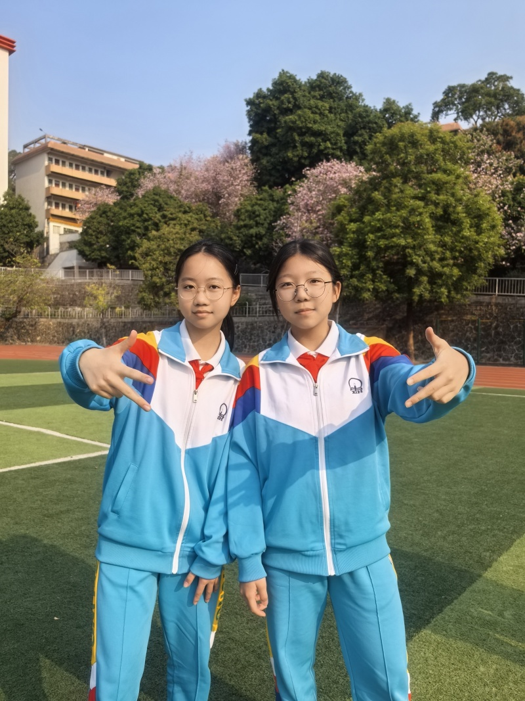

风声簌簌
蝉鸣声声
我们相遇于桂花飘香的九月
毕业于凤凰花开的七月

珍贵的记忆，永远是校园里的点点滴滴。
一张张定格的照片，封存着无数闪光瞬间。课堂、操场、舞台，每一帧都是独属于我们的青春底片。



致梁凯淇的毕业信
凯淇亲启：
江水东流不复返。三年已去，三年又至，三年来我真的很少和异性交流（包括微信）得这么多，可以说你是我聊天时长最长的异性。
我记忆中的你，在舞台上闪闪发光，在讲台上刚正不阿，在下课间欢乐而抽象……这些都是你身上独特的魅力。当然你的朋友圈更展示了你独特的一面：敢于大大方方的表达自己的情绪。
对了！我猜你因该好奇我为什么喜欢伍轩乐吧？说实在的，我只是单纯的喜欢她才华横溢，闭月羞花，三观正……我初三第二学期的备考精神动力也是源于她。当然，不要跟别人说，我也怕引起误会，其实你也很可爱(^人^)
希望你在未来的路上继续闪闪发光，未来可期。
祝你万事皆顺，所愿皆成！
少年自有凌云骨，此去当酬济世心
——毕业留念